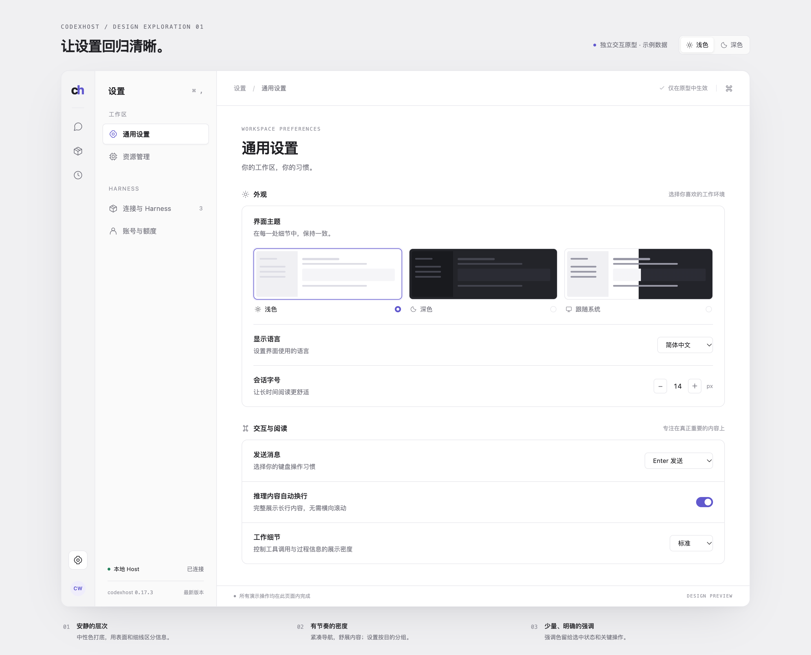
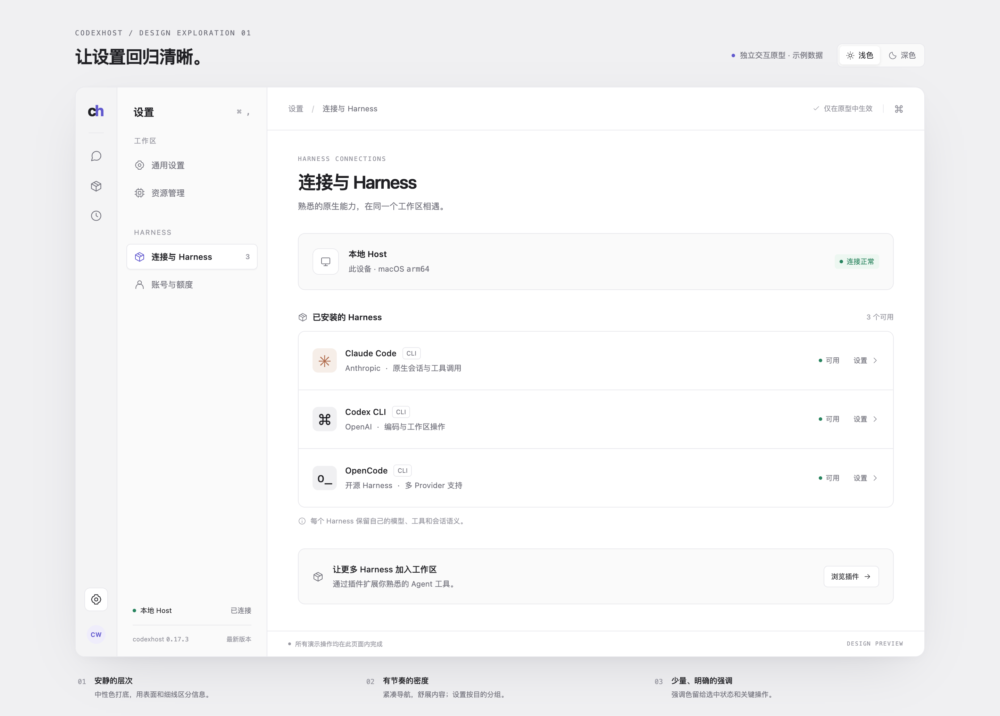
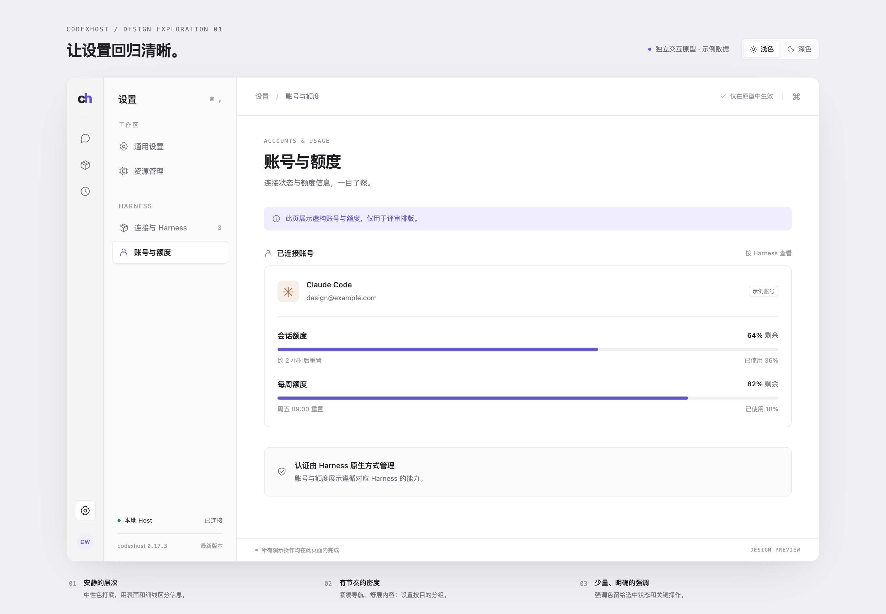
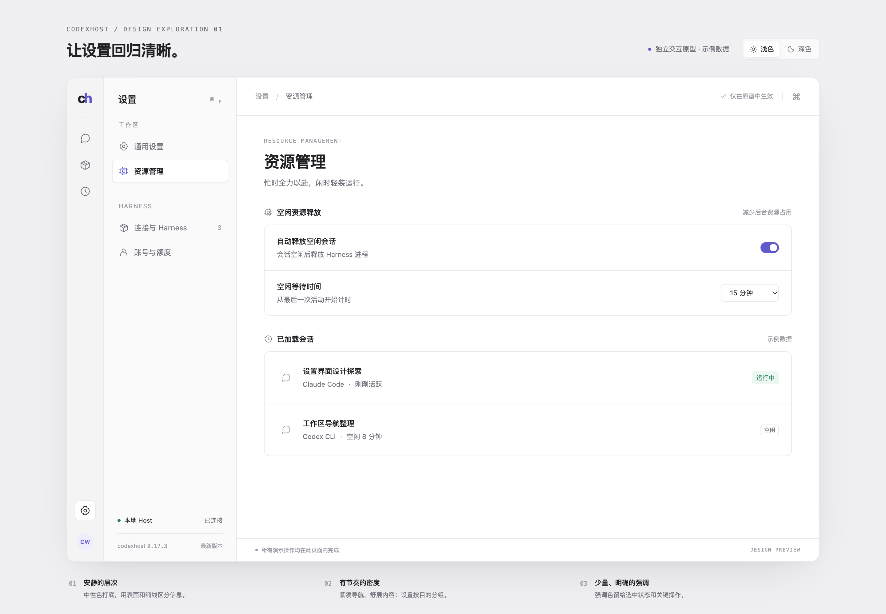
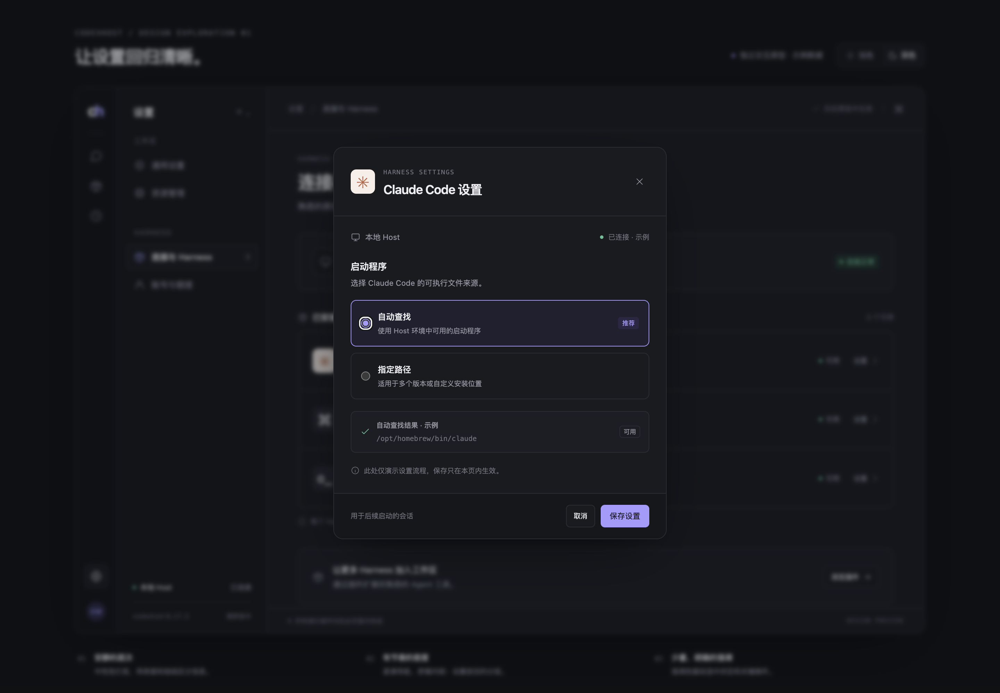
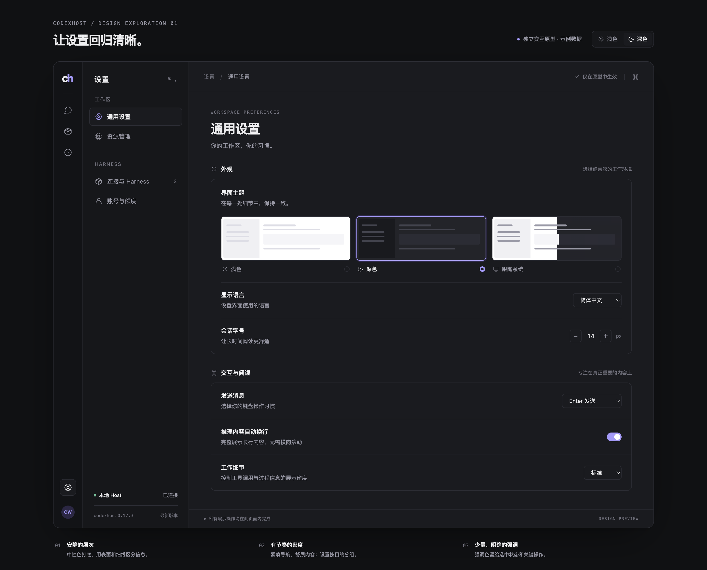

01 / WORKSPACE
体验浅色 →
通用设置
主题缩略图、分组设置与统一的控件节奏。

02 / HARNESS
体验 →
连接与 Harness
将环境状态、Harness 与操作入口放在同一条阅读线上。

03 / ACCOUNTS
体验 →
账号与额度
剩余额度、使用比例与重置时间建立清楚的主次关系。

04 / RESOURCES
体验 →
资源管理
先决定释放策略，再查看已加载的会话。

05 / FOCUSED ACTION
体验弹窗 →
Harness 启动设置
自动查找与指定路径二选一；保存和取消形成完整交互。

06 / DARK APPEARANCE
体验深色 →
同样清晰的深色
通过表面层级与细边框组织内容，控制高亮面积。
